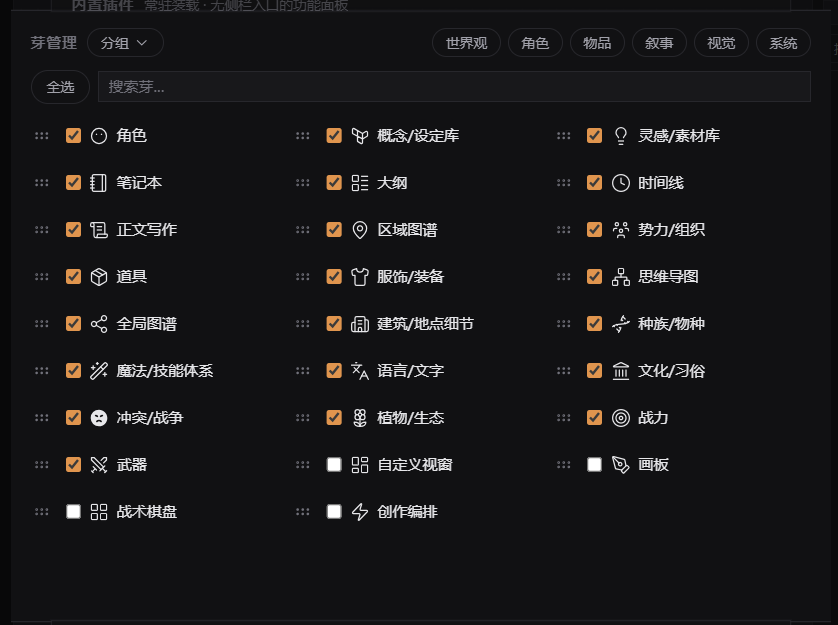
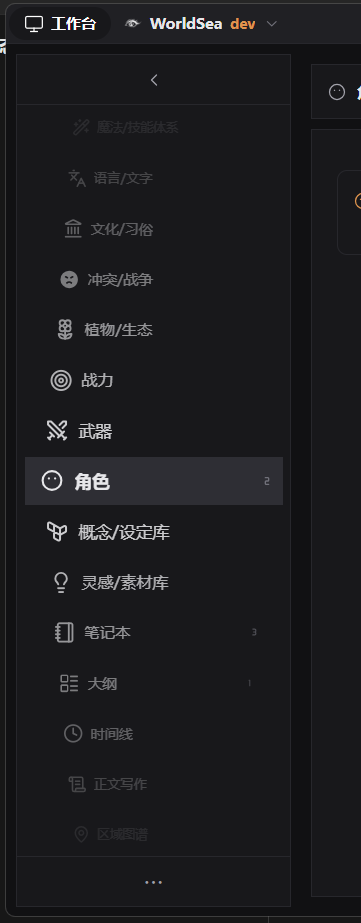

芽生态研究
27 个侧栏芽的层级、结构、依赖、关系与状态 · 2026-10-18 初版 / 2026-10-20 复核
2026-10-20 复核：芽数 26→27（新增字段矩阵芽）；关系网 / 孤岛 16/10→16/11；字段 270→276；大纲节点字段 9→15。以下数字已同步；界面截图仍为 2026-10-18 状态。
这份页面要解决的问题
芽在能力上已经各就各位，但在描述上仍是同一排抽屉：没有域、没有层级、没有依赖声明、没有统一状态。研究文档读起来费劲，是因为“层级”被拆在五份材料里；这个页面把它们收回到一条阅读线上。
研究范围是 27 个有侧栏入口的芽类；10 个 kind: 'utility' 内置插件只作为边界对照，不计入生态成员。关系数据来自 packages/entity-core/src/relations/ 的 104 条类型声明，是类型级而不是实例级，因此它反映设计意图，不代表你当前项目里的实际边数。
一句话结论：平铺不是某一个组件的 bug，而是清单、排序、渲染、管理四层都只有一维模型。只给侧栏加分组，会与设置页、持久化顺序脱节。
先看结论
- 平铺是四处叠加的结果。芽清单、侧栏、设置页、身份词表各有一层一维模型；只改其中一处，不会改变“无层级”的观感。
- 旧 6 类语义域不可信。世界观 / 角色 / 物品 / 叙事 / 视觉 / 系统混合了内容本体、媒介形态、功能职能三种轴。按“芽对 × 关系类型”实测，跨域 93 个组合，域内仅 9 个。
- 三种依赖声明全部未生效。
manifest.requires没有任何插件使用；SproutToggle.dependencies与manifest.defaultEnabled是死字段。真正存在的芽间依赖只有实体关系和少量字符串 ID。 - 生态呈“一网 + 十一岛”。16 个芽组成一个连通关系网，11 个芽在网外（新增字段矩阵为纯观测视图）。大纲是唯一的跨域消费者：出度 15、入度 0。
- 状态语义分散在四套词表。持久化
active、运行时loaded / skipped / rejected、身份builtin / external、类型sprout / utility；UI 只展示其中一部分。
现状：平铺发生在四处
“平铺”不是抽象感受。清单、侧栏、设置页、身份四个位置各自只保存一维信息，而且互不统属。
| 位置 | 现状 | 证据 |
|---|---|---|
| 芽清单 | 27 条硬编码平铺，无父子、无域字段 | settingsStore.ts 的 DEFAULT_SPROUTS |
| 侧栏 | visibleViewsInSidebarOrder() 返回一维数组，交给物理轮盘渲染 | viewOrder.ts / SidebarV2.vue |
| 设置 · 芽管理 | 一维可拖拽列表；6 个分类只做筛选，不改变列表结构 | SproutsCardContent.vue |
| 身份 | sprout / utility / external 混在同一套词汇里 | manifest.kind / SproutToggle.source |

展开 27 芽全量清单（按新 8 域分组）
| 芽 | 视图 id | 实体类型（字段数） | 默认 | 出 / 入 |
|---|---|---|---|---|
| 地理与场所 · 2 芽 | ||||
| 区域图谱 | regions | region（14） | 关 | 3 / 13 |
| 建筑 / 地点细节 | buildings | building（17） | 关 | 6 / 3 |
| 生命与族群 · 3 芽 | ||||
| 角色 | characters | character（18） | 开 | 6 / 12 |
| 种族 / 物种 | species | species（17） | 关 | 5 / 7 |
| 植物 / 生态 | plants | plant（14） | 关 | 5 / 1 |
| 社会与文明 · 4 芽 | ||||
| 势力 / 组织 | organizations | organization（13） | 关 | 2 / 10 |
| 文化 / 习俗 | culture | culture（12） | 关 | 4 / 1 |
| 语言 / 文字 | languages | language（13） | 关 | 4 / 1 |
| 冲突 / 战争 | conflicts | conflict（12） | 关 | 5 / 1 |
| 知识与规则 · 3 芽 | ||||
| 概念 / 设定库 | concepts | concept（7） | 开 | 1 / 7 |
| 魔法 / 技能体系 | magic | magic（14） | 关 | 3 / 4 |
| 战力 | combat_stats | combat_stat（11） | 关 | 5 / 2 |
| 物产与造物 · 3 芽 | ||||
| 道具 | items | item（15） | 关 | 7 / 9 |
| 服饰 / 装备 | apparel | —（Item + ApparelFacet 视图） | 关 | 0 / 0 |
| 武器 | weapons | —（Item + WeaponFacet 视图） | 关 | 0 / 0 |
| 时间与事件 · 1 芽 | ||||
| 时间线 | timeline | event（11） | 开 | 4 / 9 |
| 叙事与文本 · 4 芽 | ||||
| 大纲 | outline | outline_node（15）· outline_board（8） | 开 | 15 / 0 |
| 正文写作 | manuscript | book（3）· manuscript（12） | 关 | 0 / 0 |
| 笔记本 | notebook | notebook（10） | 开 | 0 / 0（仅自环） |
| 灵感 / 素材库 | inspirations | inspiration（10） | 开 | 6 / 1 |
| 推演与工具 · 7 芽 | ||||
| 画板 | drawing | drawing（13） | 关 | 0 / 0 |
| 战术棋盘 | tactical-board | tactical-board（10） | 关 | 0 / 0 |
| 全局图谱 | graph | — | 关 | 0 / 0 |
| 思维导图 | mindmap | — | 关 | 0 / 0 |
| 自定义视窗 | custom | — | 关 | 0 / 0 |
| 创作编排 | orchestration | pipeline（7） | 开 | 0 / 0 |
| 字段矩阵 | field-matrix | —（纯观测视图） | 开 | 0 / 0 |
口径：“出 / 入”是芽级关系图中指向其它芽 / 被其它芽指向的不同芽数（类型级，不含自环）。字段数来自芽字段矩阵；apparel / weapons 是 item 的 Facet 视图，没有独立实体类型。
语义域：旧 6 类为什么不可信
旧分类不是“不够细”，而是轴用错了。世界观 / 角色 / 物品是内容本体，视觉是媒介形态，系统是功能职能，叙事是创作阶段；四种轴放进同一层，必然互相打架。
| 问题 | 说明 |
|---|---|
| 轴混用 | 内容、媒介、功能、阶段四种判断标准同层 |
| 判定不一致 | 物种在“世界观”，角色在“角色”；文化在“世界观”，冲突在“叙事”；魔法在“世界观”，战力在“系统” |
| 只做筛选 | category 不写进 manifest，只存在于内置清单；外部插件没有分类；侧栏完全不消费它 |
| 数据不支撑 | 跨域 93 个“芽对 × 关系类型”组合，域内仅 9 个（10.33 倍） |
| 粒度失衡 | world 8 个、characters 2 个；时间类实体被塞进 narrative |
关键判断：域是栖息地，不是封装边界。真实的芽生态是跨域网状，任何“按域封闭”的设计都会与依赖冲突。
| 域 | 中文名 | 芽 | 数量 |
|---|---|---|---|
geo | 地理与场所 | 区域、建筑 | 2 |
life | 生命与族群 | 角色、物种、植物 | 3 |
society | 社会与文明 | 组织、文化、语言、冲突 | 4 |
knowledge | 知识与规则 | 概念、魔法、战力 | 3 |
goods | 物产与造物 | 道具、服饰 / 装备、武器 | 3 |
time | 时间与事件 | 时间线 | 1 |
narrative | 叙事与文本 | 大纲、正文写作、笔记本、灵感 | 4 |
tool | 推演与工具 | 画板、战术棋盘、全局图谱、思维导图、自定义视窗、创作编排、字段矩阵 | 7 |
八个域的主要邻接
下图按“关系类型数（无向聚合）”给出主要邻接。它说明八个域是栖息地，不是八个互相封闭的模块。
flowchart LR
life["生命与族群 · 3 芽"] ---|9| knowledge["知识与规则 · 3 芽"]
geo["地理与场所 · 2 芽"] ---|8| goods["物产与造物 · 3 芽"]
goods ---|8| life
life ---|7| society["社会与文明 · 4 芽"]
geo ---|7| society
geo ---|6| life
life ---|6| time["时间与事件 · 1 芽"]
goods ---|5| knowledge
narrative["叙事与文本 · 4 芽"] ---|5| society
tool["推演与工具 · 7 芽"] -.->|无实体关系| narrative
图 2：域间关系密度。数字为关系类型数（无向聚合）；工具域与内容域之间没有实体关系，这是它必须单独导航的直接证据。
拍板（2026-10-18）：8 域通过。后续新增芽可注册新域名，也可选择合适的现有域；新域注册必须给出“域名 / 核心问题 / 与现有域的关系 / 首批芽”四项。旧 6 类 category 保留为过渡标签，标记 待退役，新芽只写 domain。时间与事件保留独立域，不并入叙事。
2026-10-20 复核：拍板后首个落地的新芽「字段矩阵」目前只有旧 category: 'system'，manifest 尚未声明 domain；R1 落地时应作为 tool 域的首个声明对象。
依赖：一网 + 十一岛
系统里有七种“依赖载体”，但真正承载芽间关系的只有实体关系；其余要么是死声明，要么是字符串 ID。
| 载体 | 粒度 | 是否生效 | 现状 |
|---|---|---|---|
requires | 芽 → 服务名 | 是（装载前预检） | 无任何插件声明；本树只提供 world.info |
dependencies | 芽 → 模块 / 版本 | 否 | 死字段，全仓无读取点 |
defaultEnabled | 芽 | 否 | 装载器明确标注“当前不消费” |
entityRef | 实体 → 实体 | 是 | 仅 1 处（event.parentId） |
autoLink | 实体 → 实体 | 是（写入侧建边） | 仅 2 处（角色 race / affiliation） |
| 语义关系 | 实体类型 → 实体类型 | 是 | 104 条 / 16 域，全局注册，不归属具体芽 |
| 字符串 / JSON 字段 | 实体 → 实体 | 隐式 | 大纲 ↔ 正文、正文 ↔ 书籍、笔记 ↔ 文件夹、编排步骤、棋盘棋子 |
三种依赖声明全部未生效：requires 没有消费者，dependencies 与 defaultEnabled 是死字段。系统具备“依赖声明”的形状，但没有“依赖声明”的事实。
谁被依赖，谁在消费
把 104 条关系类型聚合到芽级，只看关系网内的 16 个芽。入度越高，越像“公共底座”；出度越高，越像“组合消费者”。
图 3：关系网内 16 个芽的入度与出度。入度 = 被多少个不同芽引用；出度 = 引用多少个不同芽。类型级聚合，不含自环；数据见页面内 JSON。
| 级别 | 判定 | 芽（入 / 出） | 生态角色 |
|---|---|---|---|
| T1 基础基质 | 入度 ≥ 9 且入 > 出 | 区域 13/3 · 角色 12/6 · 组织 10/2 · 道具 9/7 · 时间线 9/4 | 被最多芽引用的公共底座 |
| T2 专业供给 | 入度 4–7 且入 ≥ 出 | 物种 7/5 · 概念 7/1 · 魔法 4/3 | 被特定域依赖，专业化程度高 |
| T3 组合消费 | 出 > 入 | 建筑 3/6 · 战力 2/5 · 文化 1/4 · 冲突 1/5 · 语言 1/4 · 植物 1/5 · 灵感 1/6 | 依赖他人多于被依赖 |
| T4 叙事组织者 | 出度极高、入度 0 | 大纲 0/15 | 唯一跨域消费者：消费 15 个芽，自身不被引用 |
| T5 孤岛 | 出 = 入 = 0（或仅自环） | 正文、笔记本、画板、战术棋盘、创作编排、全局图谱、思维导图、自定义视窗、服饰、武器、字段矩阵 | 不进入实体关系网，自成一体 |
一网 + 十一岛
把五级营养级压成一张结构图：大纲是唯一从“叙事”伸向“世界”的桥，十一个孤岛则在网外。
flowchart TB
subgraph net["关系网 · 16 芽"]
outlineNode["大纲 0/15
唯一跨域消费者"]
t1["T1 基础基质 5 芽
区域 · 角色 · 组织 · 道具 · 时间线"]
t2["T2 专业供给 3 芽
物种 · 概念 · 魔法"]
t3["T3 组合消费 7 芽
建筑 · 文化 · 冲突 · 语言 · 植物 · 战力 · 灵感"]
end
outlineNode --> t1
outlineNode --> t2
outlineNode --> t3
subgraph islands["孤岛 · 11 芽"]
i1["正文"]
i2["笔记本（仅自环）"]
i3["画板"]
i4["战术棋盘"]
i5["创作编排"]
i6["全局图谱"]
i7["思维导图"]
i8["自定义视窗"]
i9["服饰视图"]
i10["武器视图"]
i11["字段矩阵"]
end
图 4：关系网与孤岛的结构示意。这是层级示意，不是完整边图；完整 70+ 条芽级有向边见源文档 03。
写作三芽的断链：大纲在关系网内；正文与笔记本在网外。大纲 ↔ 正文靠 outline_node.manuscriptId 与 manuscript.outlineNodeId 两个字符串互指，没有关系边。正文里的“提及实体”是文本列表，与关系体系是两套口径。
状态：四套词表
一个芽的状态现在由四个层面分别记录，彼此没有统一映射。用户无法从一个界面回答“它是什么、有没有开、有没有装上、为什么没装上”。
| 层面 | 词表 | 真源 | 用户可见 |
|---|---|---|---|
| 身份来源 | builtin / external | SproutToggle.source、id 前缀 | 芽管理行有“内置 / 外部”小字 |
| 身份类型 | sprout / utility | manifest kind | 设置页分成“芽管理”与“内置插件” |
| 激活态 | active / inactive | 项目级持久化开关 | 开关 |
| 装载态 | loaded / skipped / rejected | worldTreeState() / externalPluginStates() | 外部插件卡显示；内置芽不显示 |
一个芽的状态机
装载管线是“校验 → 服务预检 → 去重 → 启停过滤 → 装载”；关闭芽只撤入口，不撤数据。
stateDiagram-v2
[*] --> Defined
Defined --> Skipped: 用户关闭
Defined --> Loaded: 启用且装载成功
Skipped --> Loaded: 用户开启
Loaded --> Unloaded: 用户关闭
Unloaded --> Loaded: 用户开启
Loaded --> Rejected: 导入失败或依赖缺失
Skipped --> Rejected: 校验失败
note right of Unloaded
入口隐藏
实体 / 关系 / 数据保留
其它芽仍可引用
end note
图 5：芽的运行时状态。Defined / Skipped / Loaded 是装载态；Unloaded 是“已关闭但类型与数据仍在”的状态。
关闭 ≠ 删除（拍板 2026-10-18）：在芽管理中关闭一个芽，实际是隐藏它的入口；实体仍然存在，并继续供给其余芽选用。关闭撤的是视图、overlay、能力桥登记；不撤实体类型、关系类型与已写入的数据。落地前仍需真机确认“隐藏后实体可选”的完整链路。
| 字段 | 取值 | 说明 |
|---|---|---|
origin | builtin / external | 从哪来 |
kind | sprout / utility | 是否有侧栏生态位 |
activation | active / inactive | 用户意图（持久化） |
runtime | loaded / skipped / rejected | 当前实际结果（派生，不持久化） |
typesRetained | true / false | 卸载后类型与实体数据是否仍保留（设计意图：保留） |
用户信息架构：平铺的代价
侧栏是工作台日常导航的唯一入口，但它只知道“有哪些视图、按什么顺序”，不知道“它们属于哪个域”。设置页里同时存在四套组织机制，互不统属。

| 机制 | 作用 | 问题 |
|---|---|---|
category | 6 类筛选标签 | 只在设置页；不写 manifest；外部插件没有 |
sproutGroups | 用户保存的激活范围快照 | 是开关预设，不是导航结构 |
kind / source | 决定出现在哪张卡、是否可启停 | 只区分身份，不区分生态位 |
sidebarOrder | 侧栏顺序 | 顺序承担了本应由结构承担的职责 |
目标 IA：两级 + 两个辅助区（建议，待前端定稿）
两级侧栏已拍板要做，但具体交互要等你的前端形态。这里只固定结构原则，不提前施工。
flowchart LR
sidebar["侧栏"] --> pinned["收藏 / 最近使用"]
sidebar --> domains["8 个语义域"]
domains --> d1["地理与场所"]
domains --> d2["生命与族群"]
domains --> d3["社会与文明"]
domains --> d4["知识与规则"]
domains --> d5["物产与造物"]
domains --> d6["时间与事件"]
domains --> d7["叙事与文本"]
domains --> tools["推演与工具（默认折叠）"]
settings["设置 · 芽管理"] -.->|同一份域定义| domains
groups["激活分组"] -.->|正交：只改开关| domains
图 7：目标 IA 的结构原则。侧栏只展示已激活芽的域；未激活芽走“管理 / 添加”；工具域默认折叠；激活分组与域正交。
| 批次 | 内容 | 状态 |
|---|---|---|
| R1 声明层 | manifest 增加 domain / secondaryDomains；27 芽各声明一次 | 已完成 2026-10-20 |
| R2 语义域落地 | 8 域成为单一真源；旧 category 标记 待退役 | 已完成 2026-10-20 |
| R3 侧栏两级 | 域分组 + 折叠 + 收藏 / 最近；域内保留用户顺序 | 暂缓 等前端形态 |
| R4 设置同源 | 芽管理按域分组；“激活分组”独立小节；状态词统一 | 待启动 |
| R5 依赖与状态可见 | 芽详情显示入 / 出依赖、装载态、被拒原因 | 待启动 |
| R6 孤岛治理 | 大纲 ↔ 正文关系化；笔记文件夹实体化；编排步骤关系化 | 待议 涉及数据模型 |
2026-10-20 落地：27 芽已声明 domain / secondaryDomains；SPROUT_DOMAINS 为域层单一真源；旧 category 已加 @deprecated，待 R4 退役；外部插件缺域记 unclassified；本轮不改 UI。
拍板与下一步
| 决策点 | 裁定 | 当前状态 |
|---|---|---|
| 两级侧栏 | 要做，但暂缓；等用户构思前端形态 | 待启动 |
| 8 域方案 | 通过；后续新增芽可注册新域名或选现有域 | 已拍板 已落地（R1/R2） |
| 时间与事件单成员域 | 保留独立，不并入叙事 | 已拍板 |
旧 6 类 category | 保留为过渡标签，标记 待退役 | 已拍板 待 R4 退役 |
| 关闭芽的语义 | 隐藏入口、保留实体数据，实体继续供给其余芽 | 已确认 待运行时验证 |
下一步：R1 / R2 已完成（2026-10-20）；R3 等你的前端形态；R4 / R5 依赖 R3 的 UI 形态；R6 涉及数据模型，最后再议。
方法与来源
本页是研究文档的阅读版，不是新结论。初版数字来自 2026-10-18 的代码静态取证；2026-10-20 复核更新芽数、字段数与大纲节点字段。数据源为插件 manifest、registerEntityV2、defineRelation、以及芽字段矩阵。关系数据是类型级聚合，不是实例边数；因此“度”反映设计意图，不代表当前项目的数据分布。
- 芽生态研究 · README（范围、方法、结论、拍板记录）
- 01 · 现状测绘（27 芽全量清单、四类身份、五层解剖）
- 02 · 语义域重划（旧 6 类批判、新 8 域、后续新芽规则）
- 03 · 依赖与营养级（六种载体、芽级边、五级营养级）
- 04 · 生命周期与状态（状态机、卸载语义、风险）
- 05 · 用户信息架构与建议（侧栏 / 设置现状、R1–R6）
- 芽字段矩阵（21 芽 / 23 实体类型 / 276 字段实例）
- manifest.ts · tree.ts · settingsStore.ts · relations/index.ts · viewOrder.ts
说明：页面中的两张界面截图来自 2026-10-18 真机界面，用于说明“平铺”的现状；图 4 是层级示意，不是完整边图。